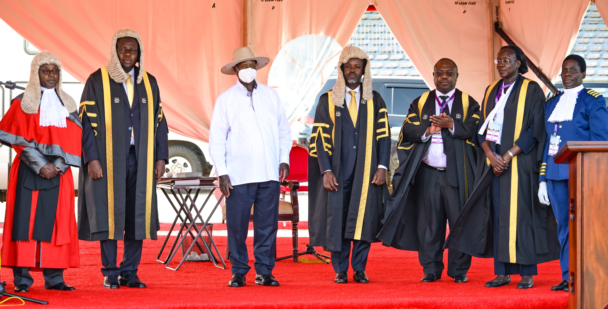

106.8 ABS FM
Empowering the Community - Through Trusted News & Information
Empowering the Community - Through Trusted News & Information
Bringing Northern Uganda closer through trusted journalism, community voices, culture, sports, and development stories.

President Yoweri Kaguta Museveni has warned that he is going to be tough on lazy and inactive leaders who don't care about the interests of the people they are supposed to serve.
According to President Museveni, lazy and inactive leaders towards socio-economic initiatives are traitors betraying their country-Uganda. “I'm in a position to be very rough with people who want a level of leadership but don't care about the people they lead. I have been talking for a long time, and I would just sound like a preacher. I have already laid a trap for all those people through programs on the ground,” he said. The President made the remarks today during the 1st meeting of the 1st session of the 12th Parliament at Kololo Independence Grounds. President Museveni’s proclamation to hold the 1st session was read by the Clerk of Parliament, Mr. Adolf Mwesige. President Museveni wondered why some Ugandans remain poor yet the government has invested a lot of capital on ground. “I'm in a very bad mood. The capital is there at each parish. Use it. Enough is enough. Every so-called leader must use the government programs to eliminate poverty and create wealth,” he cautioned. “I have put money through government programs on the ground. As I speak, in every parish there is Shs 800 million of low-cost capital.” President Museveni advised leaders that if indeed they care about the citizens, they should go back to these parishes and ask for accountability for those funds such as the Parish Development Model (PDM). “I don't want to hear that there is poverty in homesteads that have land and yet money is there at parish level. If you are a minister and I come to your village and people are still suffering, I will sack you,” he said. “I want to inform everybody that I have been monitoring and I don't want to embarrass mature people. The money is there on the ground, let's use it to get our people out of poverty.” He further warned leaders against meandering around supporting European Football clubs when their people are living in poverty, saying he will not tolerate that kind of betrayal anymore. “One of my people was inviting me for something called Arsenal. I said what's Arsenal? That I should go and celebrate. Celebrate what? I was a footballer myself; I gave up football in 1966 and now I'm on Uganda. Okay you can have your Arsenal, but start with the people please. How can you be celebrating European clubs when your people don't have anything?” he wondered. On the issue of Ebola outbreak, President Museveni tasked Ugandans to take precautionary measures to ensure that the disease is prevented. “Please set an example. There is big problem in Congo. Let's stop this business of shaking hands and so on. Ebola spreads through physical contact. I was here watching you shaking hands and hugging. Do you people know that there is Ebola? For me I've not touched any of you,” he said. During the same meeting, the Speaker and Deputy Speaker of the 12th Parliament were elected. For the Speakership position, a total of three candidates were in the race: Jacob Marksons Oboth-Oboth (West Budama Central), the National Resistance Movement (NRM) flag bearer; Paul Mwiru (Jinja East) of the National Unity Platform (NUP), presented as the joint opposition candidate; and Democratic Party (DP) President General Norbert Mao (Laroo- Pece). The Chief Justice, His Lordship, Flavian Zeija presided over the election. He cited rules of procedure guiding the election of the speaker of Parliament and tasks the clerk to Parliament to remind MPs of the guidelines and eligibility. The outgoing Vice President, H.E Jessica Alupo, also Katakwi District Woman Member of Parliament nominated Hon. Oboth Oboth for the position of Speaker of Parliament. H.E Alupo cited candidate Oboth Oboth's distinguished career in legal practice, legislative experience, experience in public service, a patriot and thorough education stance, among other unique attributes that qualify and render him the most suitable candidate for speaker of Parliament. After the vote count, Hon. Oboth-Oboth emerged the winner of the race, defeating Mwiru and Mao. He garnered 441 votes followed by Mwiru who garnered 60 votes and Mao garnered came last with 15 votes. His Lordship Zeija confirmed the outcome of the election and declared Hon. Oboth-Oboth Speaker- elect of the 12th Parliament. Subsequently, the Speaker-elect took an oath before President Museveni and he was handed instruments of power including the Mace, The national flag, Constitution, the rules of procedure of Parliament, and the speaker robes. In his address, the new Speaker of Parliament, Rt. Hon. Oboth Oboth committed to enforce prompt accountability interventions for public resources, promised rapid and highly visible changes required of Parliament. He pledged to lead a corruption-free Parliament, declaring zero tolerance to misuse of public resources. He also called on MPs to observe modesty, dignity and unity in service to regain public trust from the populace. Rt. Hon. Oboth Oboth attributed his landslide victory to faithfulness and strategic patience. On the other hand, Rt. Hon. Thomas Tayebwa (Ruhinda North) was elected Deputy Speaker of the 12th Parliament after defeating Nyakato Asinansi (Hoima City) and Sarah Aguti (Dokolo District). Rt. Hon. Tayebwa garnered 457 votes against Nyakato who garnered 45 votes and Aguti with 14 votes. He called on MPs to have a unified cause to foster socio-economic transformation for the populace with focus on wealth creation for all households. Rt. Hon. Tayebwa also commended his supporters and mobilizers across all political formations that endorsed him, the NRM Central Executive Committee that approved his candidacy and the Patriotic League of Uganda that endorsed. He promised to contribute towards building a Parliament of national pride. Lastly, President Museveni congratulated the newly elected leadership of Parliament and highlighted the transparency witnessed in the election. He also commended the opposition political parties for their involvement in the speakership race and rallied MPs to consolidate national gains initiated by the NRM government for further national socio-economic transformation and development.
Weekly discussions focus on agriculture, education, health awareness, and economic empowerment across Northern Uganda.

KAMPALA: The Stanbic Black Pirates have named a 26-man squad for Saturday’s historic Enterprise Cup final against Kenya’s Kabras Sugar RFC in Nairobi, with the team carrying Uganda’s hopes into East Africa’s biggest club rugby showdown.
Captain Isaac Massanganzira will lead the traveling side, assisted by vice-captains Frank Kidega, Alex Aturinda, and Conrad Wanyama as the Pirates seek to become the first Ugandan club in the modern era to win the regional title. The squad announcement was made during the “Twende Nairobi” sponsors and fans meet-and-greet event hosted by Stanbic Bank Uganda at Sisha Nyama Village in Kampala. Stanbic Bank Executive Director Sam Mwogeza described the Pirates’ qualification as a milestone moment for Ugandan sport. “For over 50 years, no Ugandan club has reached the finals of the prestigious Enterprise Cup. Today, the Stanbic Black Pirates have rewritten history and reminded all of us what Ugandan sport is capable of when talent, discipline, belief, and partnership come together,” Mwogeza said.
Mwogeza also rallied Ugandans travelling across the region to take advantage of Stanbic Bank’s internationally acclaimed borderless banking solutions, including cards, the Stanbic App, and FlexiPay, which enable customers to stay in control of their finances regardless of geographical location. “The ‘Twende Nairobi’ campaign is more than a rugby campaign. It is a movement that connects travel, regional integration, innovation, fan culture, and seamless financial solutions into one shared East African experience,” Mwogeza said, adding that the initiative reflects the bank’s purpose: “Uganda is our home, we drive her growth.” Mervin Odongo, the Stanbic Black Pirates Head Coach said the team understands the weight of responsibility heading into the final. “This final is bigger than the Pirates badge. We are representing Ugandan rugby and an entire country that believes in what this team has achieved,” Odongo said. Vice-captain Frank Kidega said the players are determined to reward fans for their continued support throughout the campaign. “We understand what this opportunity means for Ugandan rugby, and the squad is ready to compete and make the country proud,” Kidega said. Key to note is that the team leadership has retained a strong core that powered the Pirates’ impressive run to the final, including influential forwards Eliphaz Emong, Sunday Jaguar, Nathan Bwambale, and Samuel Lubwama, who are expected to anchor the battle upfront against the powerful Kenyan champions. In the backline, much attention will fall on vice-captain Frank Kidega, playmaker John Paul Atim, Humphrey Tashobya, and dangerous finisher Mubarak Wandera as the Pirates look to unlock Kabras Sugar’s defense. The inclusion of experienced campaigners such as Conrad Wanyama, Allan Karuhanga, and Stephen Alul adds depth and leadership to the traveling team, while younger players like Timothy Kisiga and Haruna Muhammad offer energy off the bench. Stanbic Black Pirates Traveling Squad 1.Alema Ruhweza 2.Ivan Kabagambe 3.Ariho Muhumuza 4.Umar Duff 5.Samuel Lubwama 6.Nathan Bwambale 7.Sunday Jaguar 8.Eliphaz Emong 9.Frank Kidega (VC) 10.John Paul Atim 11.Moses Zziwa 12.Sydney Gongodyo 13.Humphrey Tashobya 14.Alex Aturinda (VC) 15.Mubarak Wandera 16.Conrad Wanyama (VC) 17.Stephen Alul 18.William Nkore 19.Eric Mula 20.Davis Shimwa 21.Allan Karuhanga 22.Jeremiah Okello 23.Pius Ojeabulu 24.Timothy Kisiga 25.Haruna Muhammad 26.Isaac Massanganzira (Captain) The Pirates will depart Kampala on Wednesday ahead of the final scheduled for Saturday, May 30, in Nairobi.
🕕 The Early Bird Show — 06:00–10:00
🕙 It’s Possible Show — 10:00–12:00
🕑 Afternoon Delight — 14:00–17:00
🕔 Meeting Point — 17:00–21:00
Mewu Kono
Leyo Tam / Nywako Tam
Multiple sports discussion slots weekly.
Coko Paco & Mung Pa Acholi
Tekwaro & Wer Kwaro
Ngec Ki Dongo Lobo
Dakta-na